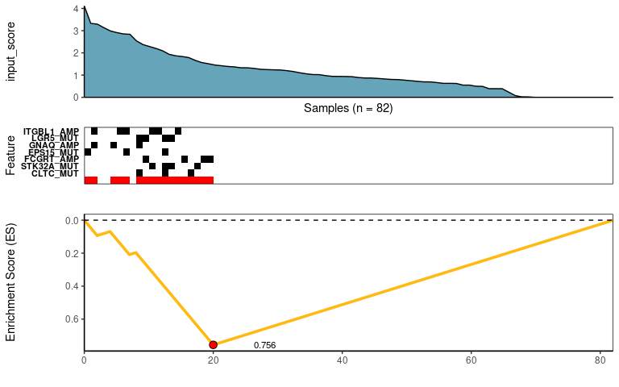

Candidate Drivers Analysis: Multi-Omic Search for Candidate Drivers of Functional Signatures
CaDrA is an R package that supports a heuristic search framework aimed at identifying candidate drivers of a molecular phenotype of interest. The main function takes two inputs: i) a binary multi-omics dataset (where the rows are 1/0 vectors indicating the presence/absence of ‘omics’ features such as somatic mutations, copy number alterations, epigenetic marks, etc.); and ii) and a molecular phenotype represented as a vector of continuous scores (sample-specific scores representing a phenotypic readout of interest, such as protein expression, pathway activity, etc.), Based on this input, CaDrA implements a forward/backward search algorithm to find the set of features that together is maximally associated with the observed input scores, based on one of several scoring functions (Kolmogorov-Smirnov, Conditional Mutual Information, Wilcoxon, custom-defined scoring function), making it useful to find complementary omics features likely driving the input molecular phenotype.
For more information, please see the associated manuscript Kartha et al. (2019)
(1) Installation
You can install the development version of CaDrA from GitHub (Recommended)
library(devtools)
devtools::install_github("montilab/CaDrA", ref="dev")(2) Quickstart
Test run code on simulated data
# Load pre-computed Top-N list generated for sim.ES dataset
data(topn.list)
# Plot the results from a top-N evaluation by passing the resulting ESet from a specific run
# To find the combination of features that had the best score
best_meta <- topn_best(topn_list = topn.list)
# Now we can plot this set of features
meta_plot(topn_best_list = best_meta)
# Get top N plot
topn_plot(topn_list = topn.list)#> Generating top N overlap heatmap..
Running on actual data
In the example below, the CCLE_MUT_SCNA expression set object has 17723 rows (features) and 82 columns (samples). The other variable is called CTNBB1_reporter which contains continuous measures of a targeted profile. The CTNBB1_reporter is what dictates how CaDrA will search for grouped meta-features.
# Load binary feature data object
data(CCLE_MUT_SCNA)
# Load a targeted profile object
data(CTNBB1_reporter)
# Number of top starting seed features to test and evaluate over
top_N <- 7
# Metric used for candidate search
# Either ks or wilcox or revealer or custom function is supported
method <- "ks"
topn_l <- topn_eval(
ES = CCLE_MUT_SCNA,
input_score = CTNBB1_reporter,
method = method,
alternative = "less",
metric = "pval",
top_N = top_N,
search_method = "both",
max_size = 7,
do_plot = FALSE, # We will plot it AFTER finding the best hits
best_score_only = FALSE # Set best_score_only = FALSE will return both the eset and best scores
)
# Now we can fetch the ESet and feature that corresponded to the best score over the top N search
topn_best_meta <- topn_best(topn_l)
# Visualize best meta-features result
meta_plot(topn_best_list = topn_best_meta)
# You can also evaluate how robust the results are depending on which seed feature you started with
topn_plot(topn_l) #> Generating top N overlap heatmap..